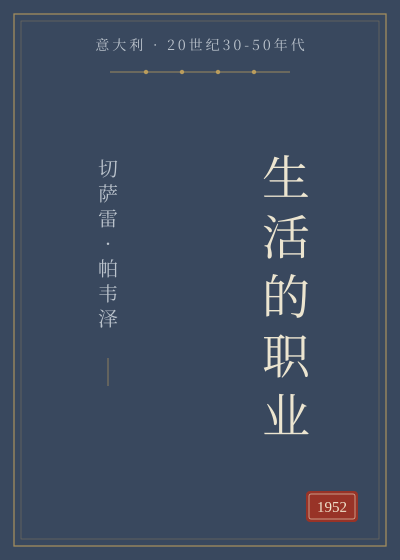
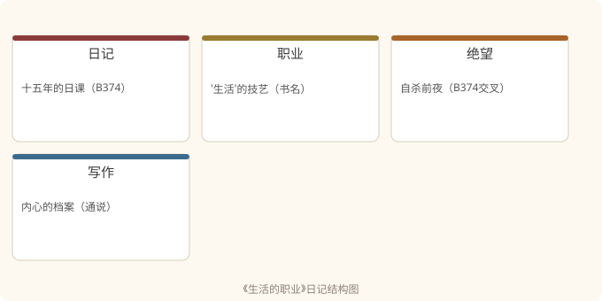

生活的职业
一、基本信息
| 作者 | 切萨雷·帕韦泽 |
|---|---|
| 成书/出版 | 1952年（Britannica B374：Il mestiere di vivere, diario 1935-1950 (1952)——日记） Cesare Pavese — Encyclopaedia Britannica（百科全书） |
| 国别/地区 | 意大利 |
| 时代 | 近代 · 20世纪30-50年代 |
| 体裁 | 日记 |
| 语言 | 意大利语 |

《生活的职业》日记结构图（主题·结构图）
二、创作背景
Britannica（B374）：Il mestiere di vivere, diario 1935-1950 (1952)——1935-1950年的日记。
Britannica（B374）：帕韦泽——1950年自杀——日记为其内心档案。
题材（通说待核）：'生活的职业'——写作、政治与绝望的日课。
三、内容脉络
（通说待核）十五年的日记：从狱中到自杀前夜。
（通说待核）'著名的句子'（不采为引文——细节通说待核）。
四、主要人物表
| 人物 | 身份 | 说明 |
|---|---|---|
| 帕韦泽 | 日记者 | （B374 语境） |
五、主题与艺术特点
- '生活的职业'（书名语境——通说待核）。
- 写作与政治的自省（B374 语境）。
- 绝望的日课（通说待核）。
六、影响与评论
- Britannica：Il mestiere di vivere (1952)（B374）。
Cesare Pavese — Encyclopaedia Britannica（百科全书） - Britannica：1950年自杀（B374 交叉）。
Cesare Pavese — Encyclopaedia Britannica（百科全书）
七、阅读建议
难点
- 日记的碎片性。
- '句子'与生活的互文。
- 《生活的职业》中译本（人民文学等——通说待核）。
- 意大利文原版。
帕韦泽内心档案；与《月亮与篝火》对读。
八、待核实
- 日记起讫（1935-1950——B374）核对。
- 1952年出版（Einaudi说）待核。
- '著名句子'细节待核（不采为引文）。